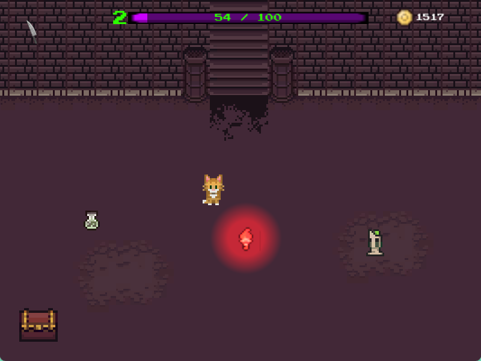
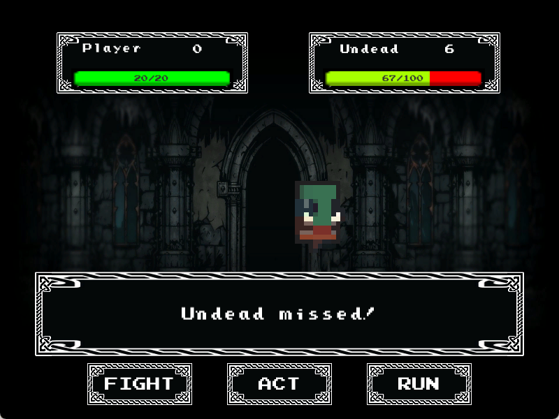
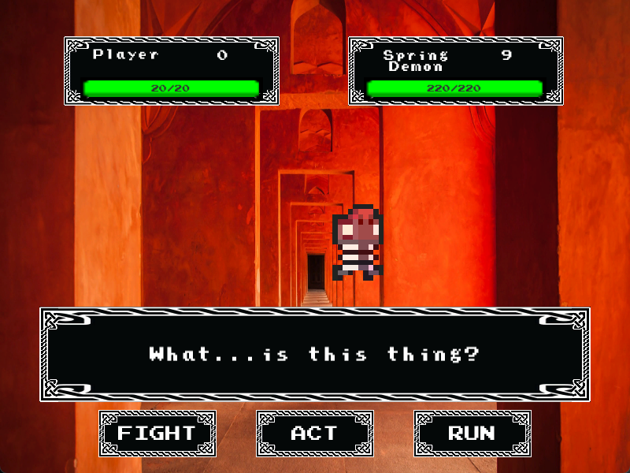
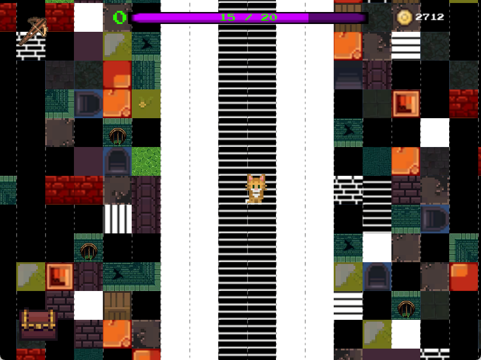

This is the game I made for my Multimedia and Game Development module at Durham University.
The game was coded using C# and made in Unity, taking approximately a month to make. I received a
First for the game, receiving particular praise for my game flow and my implementation of the various
game mechanics.
It is the first game I made, so I learned a lot about the development process as I went along.
I had to make a game from several prompts, so I decided to make a turn-based RPG about a kitten
exploring a dungeon, taking influence from games like Omori and Ib. Turn-based RPGs have always been
one of my favourite types of games, so I enjoyed being able to use the techniques I found interesting
in these games and apply them to my own. In particular, I was fascinated by how games like Undertale
or Omori used their simple graphics to create an atmosphere that heightened the emotions the player felt
instead of diminishing them. Another influence the games left on me was their use of surreal and
abstract imagery, which I used at the end of the game where I had some room to experiment.
Assassins Kitten (Download)
Level design
I wanted Assassin's Kitten to take 30-45 minutes to complete while containing a fair amount of levels,
so I designed each level to take 5-10 minutes to finish, depending on how much exploring the player
wanted to do.
There are four main levels (not including the final area and the hub world): The Dungeon,
the Sewer, the Tomb and the Depths. Each level has a unique design: The Dungeon
is a long corridor with plenty of optional rooms, the Sewer is a series of narrow twisting tunnels,
the Tomb is a wide-open plain, and the Depths is a maze of identical rooms. Each level has it's own
enemies to fight, with a boss at the end that must be defeated in order to unlock the next level.
While it's possible to go straight to the key that unlocks the boss on each level, I designed it
so that the player would need to do a decent amount of exploring in order to have a good chance of
beating the boss. Exploring rewards the player with new weapons, healing potions and chests that
contain gold.
Battle system

Since I made the game in Unity instead of an engine like RPGMaker, I had to design the battle system
from scratch, which required setting up a unique battle screen that needed different mechanics to
every other screen in the game. The battle system is a standard rpg battle system, where the player
can either attack an enemy, use an item (such as switch their weapon or drink a potion), or run away.
I added my own unique element to the battle system by giving each weapon five properties:
- STRENGTH (which is the weapon's maximum damage)
- RELIABILITY (which is the weapon's minimum damage)
- ACCURACY (which is the chance of scoring a critical hit)
- SPEED (which is the chance the weapon doesn't miss)
- DEFENSE (which determines how much the weapon reduces any damage to the player)

I used my background in mathematics to design each weapon so that each one had certain properties that they did
better and worse than others, so that the player had a wide variety of options to use without having
to specifically rely on one or two weapons in particular. For example, the warhammer has high STRENGTH
and RELIABILITY but low SPEED, meaning it does high average damage but has a higher chance of missing.
In contrast, the crossbow has moderate STRENGTH and high DEFENSE, so it does less damage but also
allows the player to take more hits. In addition, I added a few Elite weapons that could be found in the later
levels for the player to use, such as the Moon Bow, which gives the player a much higher chance of a critical
hit than any other weapon.
Levelling up
The most important part of the game design was the flow as the player progressed. I wanted the player
to be able to level up enough to complete each level by playing normally (i.e. finding the key and proceeding
to the boss without investigating all the side areas scattered across the level).
The main elements of this were the player level and the weapon level. Levelling up the player
grants them more health, which is achieved by killing enemies, with higher-level enemies
granting more XP. I designed the game so that the player would level up two or three times per level
if they proceeded normally, while they would level up four to five times per level if they took
the time to explore. The player has a maximum level of 20, so more thorough players would be able
to reach maximum level by the time they finished.
The other aspect of levelling up was the weapon level system. Each weapon has five levels, which changes
their STRENGTH and RELIABILITY, giving them higher maximum and minimum damage. Levelling up the players
weapons can be done at the blacksmith, as long as the player has enough money. The aim was to have the
player upgrade their weapon once per level, with normal weapons costing less to upgrade than Elite weapons,
which could only be upgraded by the player grinding enemies. In addition, I added a shopkeeper so the player
had the choice of buying the weapons instead of searching the levels for them, though I made the prices
expensive enough that the player would be encouraged to explore first. The last touch I made was to make it
so that if a player got rid of a weapon and then added it again, they would keep their upgrades, in order
to allow the player to experiment with their inventory without having to grind.
Project management

The deadline for building the game was approximately a month, which meant I had to create a detailed plan, since turn-based
RPGs are hard to build in Unity. I started by sketching out the basic concept and creating the levels
before I started working on the battle system. Designing the battle mode from scratch was the hardest
part of the project, but once I had done it I was able to create and make data for all the various enemies.
I wasn't satisfied with the simple combat system, which is when I added the weapon system. Once I hade done
this, I had to redo most of the enemies data to take into account different weapons. After a lot of
testing I had a level progression system I was satisfied with, so in the last week I added the shop to
allow the player to buy weapons, though I also added some scattered around the levels that the player could
find. I also added music to the game and redesigned the starting weapon (the Assassin's Knife) to be undroppable,
to avoid a situation where the player got rid of all their weapons and couldn't progress. Since I had a bit of spare time left
before the deadline, I ended by adding some NPCs to explain how the various systems worked and a chart that
allowed the player to see the strengths and weaknesses of each item.
I got a First in the module, receiving particular praise for the flow of my game and the implementation of
the various mechanics.
Back